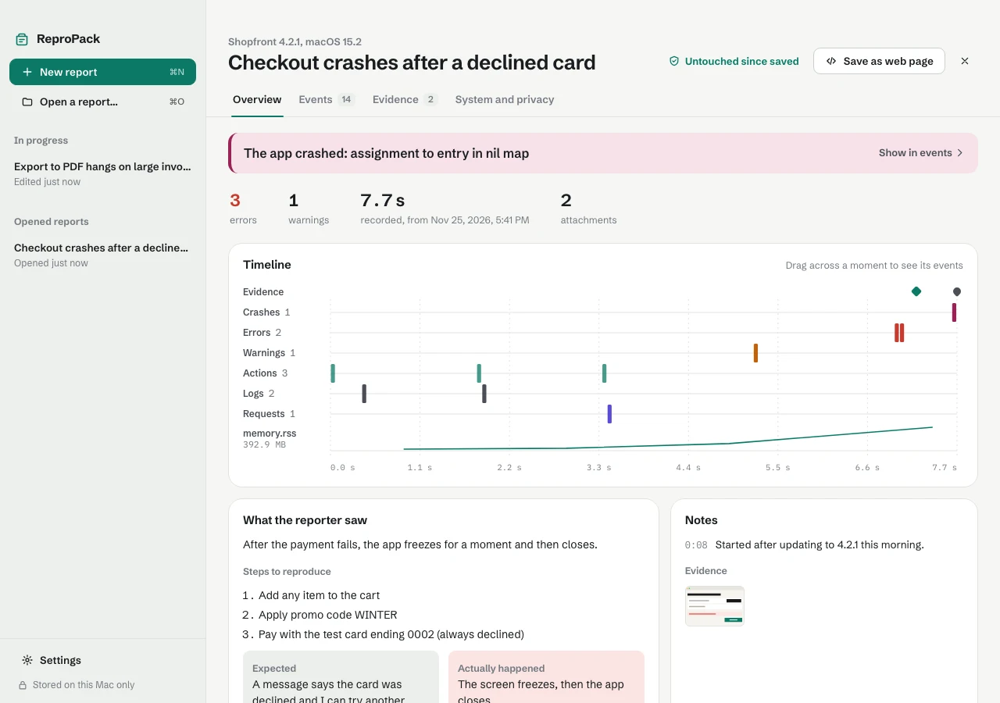

One file that explains a bug.
Put the steps, screenshots and logs in a report you can review before it leaves your device.
Open the checkout report
From a report to a fix
- Capture the problem
- The macOS app collects reproduction steps and the evidence you choose. Review sensitive text and media before exporting.
- See what happened
- Open the report’s timeline, validate the recorded hashes, or make an HTML summary for someone without ReproPack.
- Keep your existing logger
- The Go recorder can keep a bounded buffer alongside
log/slogand write a report when asked.